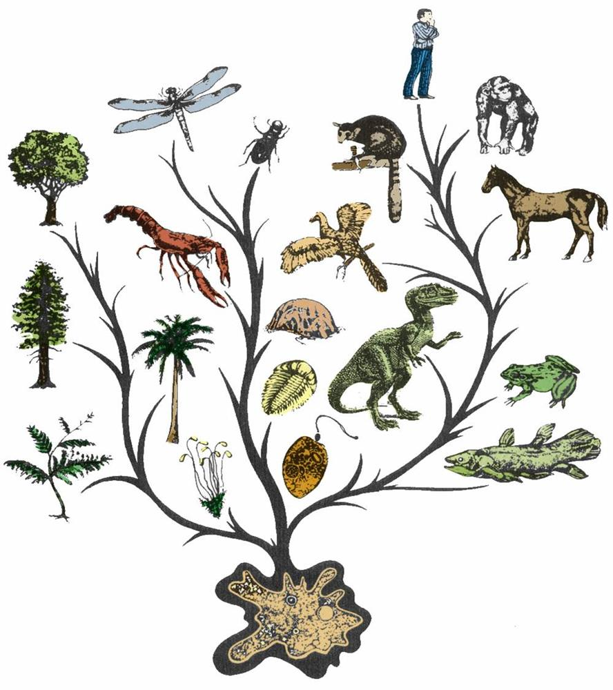

When evolution runs backwards
Evolution isn’t supposed to run backwards - yet an increasing number of examples show that it does and that it can sometimes represent the future of a species.
The description of any animal as an ‘evolutionary throwback’ is controversial. For the better part of a century, most biologists have been reluctant to use those words, mindful of a principle of evolution that says ‘evolution cannot run backwards. But as more and more examples come to light and modern genetics enters the scene, that principle is having to be rewritten. Not only are evolutionary throwbacks possible, they sometimes play an important role in the forward march of evolution.
The technical term for an evolutionary throwback is an ‘atavism’, from the Latin atavus, meaning forefather. The word has ugly connotations thanks largely to Cesare Lombroso, a 19th-century Italian medic who argued that criminals were born not made and could be identified by certain physical features that were throwbacks to a primitive, sub-human state.
While Lombroso was measuring criminals, a Belgian palaeontologist called Louis Dollo was studying fossil records and coming to the opposite conclusion. In 1890 he proposed that evolution was irreversible: that ‘an organism is unable to return, even partially, to a previous stage already realised in the ranks of its ancestors. Early 20th-century biologists came to a similar conclusion, though they qualified it in terms of probability, stating that there is no reason why evolution cannot run backwards -it is just very unlikely. And so the idea of irreversibility in evolution stuck and came to be known as ‘Dollo’s law.
If Dollo’s law is right, atavisms should occur only very rarely, if at all. Yet almost since the idea took root, exceptions have been cropping up. In 1919, for example, a humpback whale with a pair of leglike appendages over a metre long, complete with a full set of limb bones, was caught off Vancouver Island in Canada. Explorer Roy Chapman Andrews argued at the time that the whale must be a throwback to a land-living ancestor. ‘I can see no other explanation, he wrote in 1921.
Since then, so many other examples have been discovered that it no longer makes sense to say that evolution is as good as irreversible. And this poses a puzzle: how can characteristics that disappeared millions of years ago suddenly reappear?
In 1994, Rudolf Raff and colleagues at Indiana University in the USA decided to use genetics to put a number on the probability of evolution going into reverse. They reasoned that while some evolutionary changes involve the loss of genes and are therefore irreversible, others may be the result of genes being switched off. If these silent genes are somehow switched back on, they argued, longlost traits could reappear.
Raff’s team went on to calculate the likelihood of it happening. Silent genes accumulate random mutations, they reasoned, eventually rendering them useless. So how long can a gene survive in a species if it is no longer used? The team calculated that there is a good chance of silent genes surviving for up to 6 million years in at least a few individuals in a population, and that some might survive as long as 10 million years. In other words, throwbacks are possible, but only to the relatively recent evolutionary past.
As a possible example, the team pointed to the mole salamanders of Mexico and California. Like most amphibians these begin life in a juvenile ‘tadpole’ state, then metamorphose into the adult form – except for one species, the axolotl, which famously lives its entire life as a juvenile. The simplest explanation for this is that the axolotl lineage alone lost the ability to metamorphose, while others retained it. From a detailed analysis of the salamanders’ family tree, however, it is clear that the other lineages evolved from an ancestor that itself had lost the ability to metamorphose. In other words, metamorphosis in mole salamanders is an atavism. The salamander example fits with Raff’s 10million-year time frame.
More recently, however, examples have been reported that break the time limit, suggesting that silent genes may not be the whole story. In a paper published last year, biologist Gunter Wagner of Yale University reported some work on the evolutionary history of a group of South American lizards called Bachia. Many of these have minuscule limbs; some look more like snakes than lizards and a few have completely lost the toes on their hind limbs. Other species, however, sport up to four toes on their hind legs. The simplest explanation is that the toed lineages never lost their toes, but Wagner begs to differ. According to his analysis of the Bachia family tree, the toed species re-evolved toes from toeless ancestors and, what is more, digit loss and gain has occurred on more than one occasion over tens of millions of years.
So what’s going on? One possibility is that these traits are lost and then simply reappear, in much the same way that similar structures can independently arise in unrelated species, such as the dorsal fins of sharks and killer whales. Another more intriguing possibility is that the genetic information needed to make toes somehow survived for tens or perhaps hundreds of millions of years in the lizards and was reactivated. These atavistic traits provided an advantage and spread through the population, effectively reversing evolution.
But if silent genes degrade within 6 to million years, how can long-lost traits be reactivated over longer timescales? The answer may lie in the womb. Early embryos of many species develop ancestral features. Snake embryos, for example, sprout hind limb buds. Later in development these features disappear thanks to developmental programs that say ‘lose the leg’. If for any reason this does not happen, the ancestral feature may not disappear, leading to an atavism.
Questions 1-5
Choose the correct letter, A, B, C or D.
Write the correct letter in boxes 1-5 on your answer sheet.
1. When discussing the theory developed by Louis Dollo, the writer says that
A it was immediately referred to as Dollo’s law.
B it supported the possibility of evolutionary throwbacks.
C it was modified by biologists in the early twentieth century.
D it was based on many years of research.
2. The humpback whale caught off Vancouver Island is mentioned because of
A the exceptional size of its body.
B the way it exemplifies Dollo’s law.
C the amount of local controversy it caused.
D the reason given for its unusual features.
3. What is said about ‘silent genes’?
A Their numbers vary according to species.
B Raff disagreed with the use of the term.
C They could lead to the re-emergence of certain characteristics.
D They can have an unlimited life span.
4. The writer mentions the mole salamander because
A it exemplifies what happens in the development of most amphibians.
B it suggests that Raffs theory is correct.
C it has lost and regained more than one ability.
D its ancestors have become the subject of extensive research.
5. Which of the following does Wagner claim?
A Members of the Bachia lizard family have lost and regained certain features several times.
B Evidence shows that the evolution of the Bachia lizard is due to the environment.
C His research into South American lizards supports Raffs assertions.
D His findings will apply to other species of South American lizards.
Questions 6-10
Complete each sentence with the correct ending, A-G, below.
Write the correct letter, A-G, in boxes 6-10 on your answer sheet.
6 For a long time biologists rejected
7 Opposing views on evolutionary throwbacks are represented by
8 Examples of evolutionary throwbacks have led to
9 The shark and killer whale are mentioned to exemplify
10 One explanation for the findings of Wagner’s research is
B the occurrence of a particular feature in different species.
C parallels drawn between behaviour and appearance.
D the continued existence of certain genetic information.
E the doubts felt about evolutionary throwbacks.
F the possibility of evolution being reversible.
G Dollo's findings and the convictions held by Lombroso.
Questions 11-14
Do the following statements agree with the claims of the writer in Reading Passage?
In boxes 11-14 on your answer sheet, write
YES if the statement agrees with the claims of the writer
NO if the statement contradicts the claims of the writer
NOT GIVEN if it is impossible to say what the writer thinks about this
11 Wagner was the first person to do research on South American lizards.
12 Wagner believes that Bachia lizards with toes had toeless ancestors.
13 The temporary occurence of longlost traits in embryos is rare.
14 Evolutionary throwbacks might be caused by developmental problems in the womb.
---End of the Test---
Please Submit to view your score, solution and explanations.